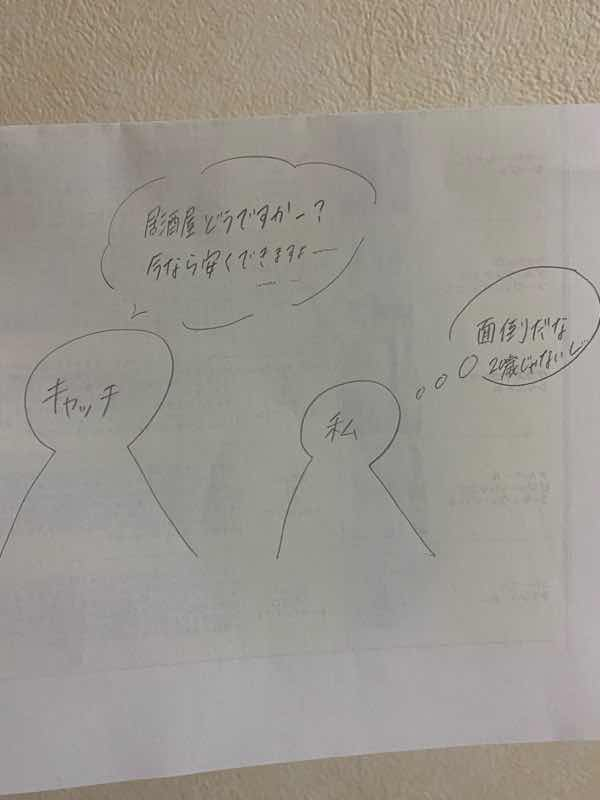
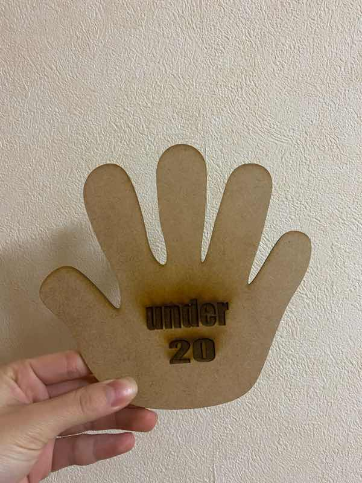
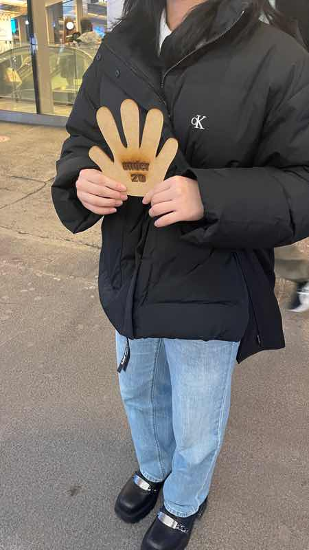
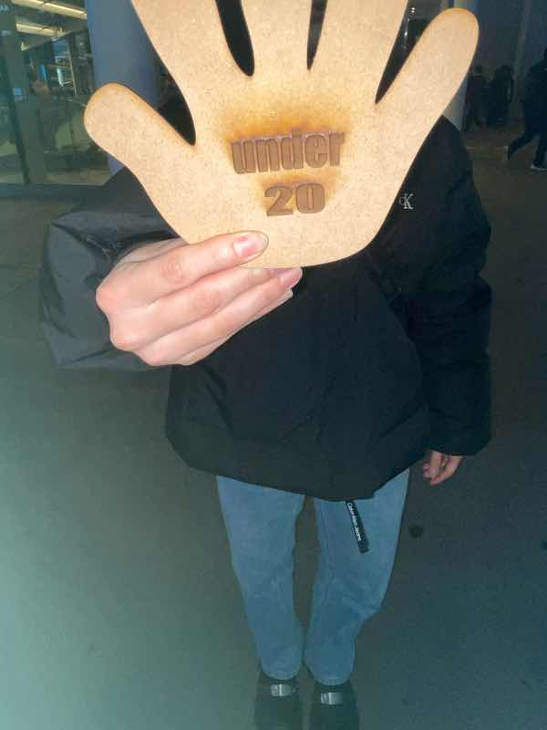

誰かのためになるものを作る
今回のテーマ Design for Others のように、誰かのためになるものを作る課題で、居酒屋のキャッチを追い払えるものを作成した。
問題の説明
繁華街にいるときに、居酒屋のキャッチに声をかけられることが大学生になって増えた。しつこく声をかけ続けてくる人もちょくちょくいる。
声をかけられても一言で終わる、そもそも声をかけられないようにする、そんなことができるようになるものは作れないかと考えた。

実際の作品

実際に外で使用している様子は以下の通り （撮影場所は横浜駅西口）


作品の説明
ターゲットは２０歳未満の大学生がメイン。居酒屋のキャッチ対策のもの。キャッチには、断っても何度も声をかけてくる人もいるため、面倒くさい。
そこで考えたのがこの作品。一目で２０歳未満と分かるため、キャッチを追い払うことができる。そもそも声をかけられることもないかも。
土台となる部分は、手を広げたときをイメージしたもの。
特徴的で目につきやすく、”とまれ” ”ストップ！” という意味合いが伝わるようにした。
使用機材
レーザーカッター
同班メンバーのリンク
muku
kiichi
＊他２人はユーザー名が分からなかったため無記載
反省
今の自分や同級生が使える場面が多いものを作れた。
ただ、夜だと文字が見えにくくなる可能性があるので、ライトを使ったりするなど文字をもう少し分かりやすくする工夫ができたらよかった。